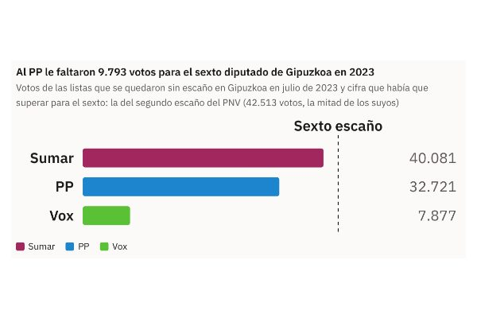
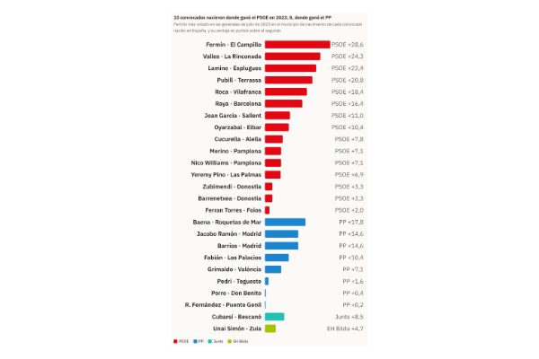
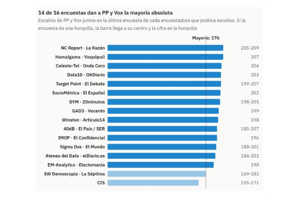

Actualidad · Primer voto · España
Vox, primero en el CIS entre los de 18 a 24 años: la generación de 2008 estrena voto en unas generales
En 2008 nacieron en España 519.779 niños, más que en ningún año desde 1981. Son los más jóvenes de los 1.615.127 electores que votan por primera vez en unas generales. En el CIS, Vox reúne el 23,2 % del voto más simpatía de 18 a 24 años.
Por Nacho G. del Álamo · · Actualizado el
Cada párrafo lleva una etiqueta: dato (cifra comprobable con las fuentes), patrón (relación que se repite, sin afirmar la causa), hipótesis (explicación posible, sin dos fuentes independientes) o contexto (hechos y declaraciones publicados por otros, enlazados). Cómo verificamos
ContextoEn 2008 vinieron al mundo en España 519.779 niños, una cifra que ningún año había alcanzado desde 1981, según la Estadística de Nacimientos del INE. Aquella cosecha cerró una racha de crecimiento iniciada en 1999. Al año siguiente los alumbramientos ya habían caído a 494.997, y desde entonces solo repuntaron en 2014: en 2024 se registraron 318.005, el mínimo desde que arranca la serie, en 1975. Los bebés de 2008 superan en un 63,4 % a los de 2024.
DatoDieciocho años después, esa generación llega a las urnas. Con ella, el 29 de noviembre estrenarán su voto en unas generales 1.615.127 españoles que viven en España, todos los que han alcanzado la mayoría de edad desde la cita del 23 de julio de 2023: el 4,5 % de los 35.958.711 electores residentes en el país. El Instituto Nacional de Estadística dio la cifra el 9 de octubre en su nota sobre el censo electoral, de la que se hizo eco EFE:
«De los electores residentes en España, 1.615.127 podrán participar por primera vez en unas elecciones generales, por haber cumplido 18 años desde la anterior votación a Cortes Generales, celebrada el 23 de julio de 2023»
ContextoPor fecha de nacimiento, ese grupo abarca desde quienes nacieron el 24 de julio de 2005 hasta quienes lo hicieron el 29 de noviembre de 2008. Los de 2008 son los últimos en incorporarse y proceden del año con más nacimientos desde principios de los ochenta.
Ver la tabla
| Año | Nacimientos |
|---|---|
| 2024 | 318.005 |
| 2023 | 320.656 |
| 2022 | 329.251 |
| 2021 | 337.380 |
| 2020 | 341.315 |
| 2019 | 360.617 |
| 2018 | 372.777 |
| 2017 | 393.181 |
| 2016 | 410.583 |
| 2015 | 420.290 |
| 2014 | 427.595 |
| 2013 | 425.715 |
| 2012 | 454.648 |
| 2011 | 471.999 |
| 2010 | 486.575 |
| 2009 | 494.997 |
| 2008 | 519.779 |
| 2007 | 492.527 |
| 2006 | 482.957 |
| 2005 | 466.371 |
| 2004 | 454.591 |
| 2003 | 441.881 |
| 2002 | 418.846 |
| 2001 | 406.380 |
| 2000 | 397.632 |
| 1999 | 380.130 |
| 1998 | 365.193 |
| 1997 | 369.035 |
| 1996 | 362.626 |
| 1995 | 363.469 |
| 1994 | 370.148 |
| 1993 | 385.786 |
| 1992 | 396.747 |
| 1991 | 395.989 |
| 1990 | 401.425 |
| 1989 | 408.434 |
| 1988 | 418.919 |
| 1987 | 426.782 |
| 1986 | 438.750 |
| 1985 | 456.298 |
| 1984 | 473.281 |
| 1983 | 485.352 |
| 1982 | 515.706 |
| 1981 | 533.008 |
| 1980 | 571.018 |
| 1979 | 601.992 |
| 1978 | 636.892 |
| 1977 | 656.357 |
| 1976 | 677.456 |
| 1975 | 669.378 |
DatoNo todos llegarán a tiempo. Quien nació a partir del 30 de noviembre de 2008 cumplirá los 18 años al día siguiente de la votación o más tarde. Solo en diciembre de aquel año nacieron 43.162 niños, el 8,3 % del total anual; a ellos se añaden los del 30 de noviembre, un recuento diario que el INE no publica.
Más que cuando nacieron
DatoLa generación ha crecido desde la cuna. A 1 de enero de 2025, la fecha más reciente con datos por año de nacimiento de la Estadística Continua de Población del INE, residían en España 551.743 personas nacidas en 2008 (285.192 hombres y 266.551 mujeres), un 6,1 % más que los bebés registrados aquel año: las llegadas han superado a las marchas y a las defunciones. De ellas, 64.655 vinieron al mundo en el extranjero.
DatoPara votar en unas generales hace falta la nacionalidad española, y la tienen 485.891; los 65.852 restantes son extranjeros. Ni siquiera con ese descuento pierden el primer puesto: de las cuatro cohortes que se estrenan, es la que reúne más españoles. Los nacidos en 2007 con nacionalidad que residen en España suman 469.726; los de 2006, 470.235, y los de 2005, 462.014, siempre a 1 de enero de 2025 (ECP, tabla por nacionalidad).
DatoFrente a 2023, el contingente es algo menor, aunque se ha reunido más deprisa. En aquellas generales, el INE cifró en 1.639.179 los españoles residentes que votaban por primera vez, quienes habían cumplido 18 años desde el 10 de noviembre de 2019 (nota de prensa del 5 de junio de 2023). Entre una cita y otra mediaron 1.351 días; esta vez han sido 1.225. El ritmo medio pasa así de 1.213 nuevos electores diarios a 1.318.
El mapa de los nacidos en 2008
DatoEn el conjunto del país representan el 1,1 % de la población. Su huella es mayor en las dos ciudades autónomas, Melilla (1,5 %) y Ceuta (1,5 %), y en Sevilla (1,3 %), Murcia (1,3 %), Toledo (1,3 %) y Guadalajara (1,3 %). En el noroeste, en cambio, se diluyen: Zamora (0,8 %), Lugo (0,8 %), Ourense (0,8 %), León (0,8 %) y Palencia (0,9 %).
Tabla
| Provincia | Nacidos en 2008 que viven allí (1-1-2025) | % de la población | Nacimientos en 2008 | Diferencia |
|---|---|---|---|---|
| Melilla | 1.288 | 1,5 | 1.252 | +2,9 % |
| Ceuta | 1.214 | 1,5 | 1.165 | +4,2 % |
| Sevilla | 25.659 | 1,3 | 25.193 | +1,8 % |
| Murcia | 20.409 | 1,3 | 19.386 | +5,3 % |
| Toledo | 9.569 | 1,3 | 8.280 | +15,6 % |
| Guadalajara | 3.594 | 1,3 | 3.152 | +14,0 % |
| Almería | 9.564 | 1,2 | 9.135 | +4,7 % |
| Cádiz | 15.461 | 1,2 | 14.510 | +6,6 % |
| Girona | 10.128 | 1,2 | 9.334 | +8,5 % |
| Tarragona | 10.666 | 1,2 | 10.030 | +6,3 % |
| Huelva | 6.465 | 1,2 | 6.147 | +5,2 % |
| Castellón/Castelló | 7.426 | 1,2 | 7.206 | +3,1 % |
| Málaga | 21.012 | 1,2 | 19.015 | +10,5 % |
| Granada | 11.093 | 1,2 | 10.546 | +5,2 % |
| Navarra | 8.016 | 1,2 | 7.029 | +14,0 % |
| Lleida | 5.331 | 1,2 | 5.191 | +2,7 % |
| Alicante | 23.625 | 1,2 | 20.202 | +16,9 % |
| Valencia/València | 31.721 | 1,1 | 29.675 | +6,9 % |
| Córdoba | 8.829 | 1,1 | 8.679 | +1,7 % |
| Barcelona | 67.869 | 1,1 | 64.694 | +4,9 % |
| Jaén | 7.022 | 1,1 | 7.068 | -0,7 % |
| La Rioja | 3.682 | 1,1 | 3.518 | +4,7 % |
| Badajoz | 7.474 | 1,1 | 7.185 | +4,0 % |
| Ciudad Real | 5.534 | 1,1 | 5.647 | -2,0 % |
| Madrid | 79.402 | 1,1 | 78.792 | +0,8 % |
| Zaragoza | 10.930 | 1,1 | 10.292 | +6,2 % |
| Illes Balears | 13.659 | 1,1 | 12.713 | +7,4 % |
| Albacete | 4.258 | 1,1 | 4.092 | +4,1 % |
| Gipuzkoa | 7.972 | 1,1 | 7.239 | +10,1 % |
| Araba/Álava | 3.692 | 1,1 | 3.210 | +15,0 % |
| Cantabria | 6.356 | 1,1 | 5.886 | +8,0 % |
| Huesca | 2.453 | 1,1 | 2.141 | +14,6 % |
| Santa Cruz de Tenerife | 11.453 | 1,1 | 9.901 | +15,7 % |
| Las Palmas | 12.331 | 1,1 | 10.771 | +14,5 % |
| Burgos | 3.799 | 1,0 | 3.525 | +7,8 % |
| Valladolid | 5.476 | 1,0 | 5.054 | +8,3 % |
| Pontevedra | 9.693 | 1,0 | 8.986 | +7,9 % |
| Segovia | 1.605 | 1,0 | 1.530 | +4,9 % |
| Bizkaia | 11.808 | 1,0 | 10.861 | +8,7 % |
| Teruel | 1.364 | 1,0 | 1.242 | +9,8 % |
| Cáceres | 3.845 | 1,0 | 3.550 | +8,3 % |
| Cuenca | 1.956 | 1,0 | 1.867 | +4,8 % |
| Soria | 878 | 1,0 | 772 | +13,7 % |
| Ávila | 1.564 | 1,0 | 1.526 | +2,5 % |
| A Coruña | 10.821 | 1,0 | 9.825 | +10,1 % |
| Salamanca | 3.106 | 0,9 | 2.899 | +7,1 % |
| Asturias | 9.098 | 0,9 | 8.221 | +10,7 % |
| Palencia | 1.374 | 0,9 | 1.278 | +7,5 % |
| León | 3.772 | 0,8 | 3.511 | +7,4 % |
| Ourense | 2.551 | 0,8 | 2.156 | +18,3 % |
| Lugo | 2.572 | 0,8 | 2.208 | +16,5 % |
| Zamora | 1.304 | 0,8 | 1.216 | +7,2 % |
DatoEn números absolutos, Madrid encabeza la lista con 79.402, por delante de Barcelona (67.869), Valencia (31.721), Sevilla (25.659) y Alicante (23.625). Casi todas las provincias cuentan hoy con más jóvenes de 2008 de los que vieron nacer aquel año. Ourense suma un 18,3 %; Alicante, un 16,9 %; Lugo, un 16,5 %; Santa Cruz de Tenerife, un 15,7 %, y Toledo, un 15,6 %. Únicamente Ciudad Real (-2,0 %) y Jaén (-0,7 %) conservan menos de los que nacieron allí, y Madrid se queda prácticamente igual: +0,8 %.
ContextoLa paradoja gallega tiene explicación. Ourense y Lugo, donde la generación de 2008 pesa menos, figuran entre las que más han ganado porque partían de muy poco: allí nacieron aquel año 2.156 y 2.208 niños, respectivamente, según la residencia de la madre, y cada recién llegado cuenta mucho sobre una base tan estrecha.
Municipio a municipio
ContextoPara bajar al detalle local hay que retroceder en el tiempo. La Estadística Continua de Población se detiene en la provincia, y el último padrón continuo con la edad año a año por municipio es el del 1 de enero de 2022, cuando estos chicos tenían 13 años. Ese día se contaban en España 526.664 personas de esa edad, el 1,1 % de la población: 30.761 en el municipio de Madrid y 14.353 en el de Barcelona.
DatoEntre las localidades de más de 5.000 habitantes, la mayor proporción de chicos de 13 años aparecía en el entorno de Madrid, Sevilla, Salamanca, Girona y Zaragoza: Villanueva del Pardillo (2,2 %, la única por encima del 2 %), Espartinas (2,0 %), Carbajosa de la Sagrada (2,0 %), Celrà (1,9 %) y La Puebla de Alfindén (1,9 %). En el extremo opuesto figuraban Malpica de Bergantiños (A Coruña, 0,4 %), Ortigueira (A Coruña, 0,5 %), Guardo (Palencia, 0,5 %) y Tineo (Asturias, 0,5 %).
Ver la tabla
| Municipio | Provincia | Personas de 13 años | Población | % |
|---|---|---|---|---|
| Villanueva del Pardillo | Madrid | 384 | 17.382 | 2,2 |
| Espartinas | Sevilla | 324 | 16.401 | 2,0 |
| Carbajosa de la Sagrada | Salamanca | 146 | 7.424 | 2,0 |
| Celrà | Girona | 107 | 5.503 | 1,9 |
| La Puebla de Alfindén | Zaragoza | 125 | 6.442 | 1,9 |
| Torrejón del Rey | Guadalajara | 114 | 6.002 | 1,9 |
| Humanes de Madrid | Madrid | 369 | 19.838 | 1,9 |
| Vegas del Genil | Granada | 220 | 11.874 | 1,9 |
| Noáin (Valle de Elorz)/Noain (Elortzibar) | Navarra | 155 | 8.367 | 1,9 |
| Boadilla del Monte | Madrid | 1.159 | 62.627 | 1,9 |
| Daganzo de Arriba | Madrid | 195 | 10.650 | 1,8 |
| Paracuellos de Jarama | Madrid | 482 | 26.450 | 1,8 |
| María de Huerva | Zaragoza | 112 | 6.168 | 1,8 |
| Argés | Toledo | 124 | 6.829 | 1,8 |
| Pioz | Guadalajara | 91 | 5.013 | 1,8 |
| Zaratán | Valladolid | 114 | 6.285 | 1,8 |
| Palazuelos de Eresma | Segovia | 104 | 5.743 | 1,8 |
| Huarte | Navarra | 132 | 7.312 | 1,8 |
| Umbrete | Sevilla | 166 | 9.253 | 1,8 |
| Cartes | Cantabria | 103 | 5.781 | 1,8 |
| Yuncos | Toledo | 189 | 10.630 | 1,8 |
| Huércal de Almería | Almería | 323 | 18.384 | 1,8 |
| Bormujos | Sevilla | 394 | 22.536 | 1,7 |
| Santa Coloma de Cervelló | Barcelona | 145 | 8.309 | 1,7 |
| La Muela | Zaragoza | 109 | 6.247 | 1,7 |
| Villamayor | Salamanca | 129 | 7.402 | 1,7 |
| Simancas | Valladolid | 94 | 5.423 | 1,7 |
| Almensilla | Sevilla | 111 | 6.415 | 1,7 |
| Polinyà | Barcelona | 146 | 8.451 | 1,7 |
| El Casar | Guadalajara | 223 | 12.919 | 1,7 |
Su voz en el CIS
ContextoEl CIS no entrevista a menores, de modo que en su preelectoral, realizado del 7 al 30 de octubre, solo aparecen los nacidos en 2008 que ya habían cumplido 18 años. Su franja más joven, de 18 a 24 años, agrupa a los nacidos entre 2001 y 2008 y suma 3.934 entrevistas ponderadas, con un error teórico de ±1,6 puntos según la fórmula del propio instituto. Lo que sigue refleja lo que declara ese grupo, no una estimación de voto: el CIS no la publica por edades.
DatoEn voto más simpatía, que agrega a quienes dicen a qué partido votarán y a quienes, sin desvelarlo, confiesan por cuál sienten más afinidad, Vox encabeza la franja de 18 a 24 años con el 23,2 %, seguido del PSOE (22,0 %) y del PP (14,5 %). Entre el conjunto de entrevistados, el orden es otro: PSOE (32,0 %), PP (19,2 %) y Vox (15,8 %). Vox mantiene la cabeza entre los de 25 a 34 años; a partir de los 35, el PSOE toma el relevo. El Frente Amplio obtiene el 5,5 % entre los más jóvenes (el 4,4 % en total), y Se Acabó la Fiesta, el 2,0 % (1,4 %).
Ver la tabla
| Edad | PSOE | PP | Vox | Frente Amplio | SALF | Entrevistas |
|---|---|---|---|---|---|---|
| Total | 32,0 | 19,2 | 15,8 | 4,4 | 1,4 | 45.074 |
| 18–24 | 22,0 | 14,5 | 23,2 | 5,5 | 2,0 | 3.934 |
| 25–34 | 21,8 | 13,0 | 22,5 | 7,6 | 2,6 | 5.310 |
| 35–44 | 24,6 | 15,3 | 23,9 | 5,2 | 2,9 | 6.811 |
| 45–54 | 27,9 | 21,3 | 18,3 | 4,1 | 1,7 | 8.881 |
| 55–64 | 35,3 | 20,4 | 12,3 | 4,0 | 0,8 | 8.055 |
| 65–74 | 44,1 | 20,1 | 7,4 | 3,4 | 0,2 | 5.996 |
| 75 y más | 45,6 | 26,3 | 5,4 | 2,0 | 0,0 | 6.087 |
DatoEn la escala ideológica del CIS, que va del 1 (izquierda) al 10 (derecha), los de 18 a 24 años se colocan de media en el 4,9; el conjunto, en el 4,6. Rehúyen los extremos más que el resto de los entrevistados: en el 1, el más escorado a la izquierda, se sitúa el 13,6 %, frente al 22,0 % del total, y en el 10, el más escorado a la derecha, el 7,0 %, frente al 10,4 %.
DatoTambién se informan por otros canales. La mitad (49,6 %) sigue la política y la campaña sobre todo a través de las redes sociales, frente al 20,2 % del total. La televisión, primera ventana para el 45,2 % de los entrevistados, solo lo es para el 26,8 % de los jóvenes, y la radio, para el 1,4 %. Entre quienes se informan por redes, Instagram es la más seguida (38,2 %), por delante de TikTok (30,9 %, frente al 14,2 % en el total) y X (20,5 %). Facebook, segunda plataforma en el conjunto de la muestra, cae al 1,3 % en esta franja.
Ver la tabla
| Medio o red social | 18–24 | Total |
|---|---|---|
| Primer medio: redes sociales | 49,6 | 20,2 |
| Primer medio: televisión | 26,8 | 45,2 |
| Primer medio: prensa | 16,8 | 19,0 |
| Primer medio: radio | 1,4 | 11,5 |
| Red que más sigue (quien se informa por redes): Instagram | 38,2 | 33,9 |
| Red que más sigue (quien se informa por redes): TikTok | 30,9 | 14,2 |
| Red que más sigue (quien se informa por redes): Twitter/X | 20,5 | 15,2 |
| Red que más sigue (quien se informa por redes): YouTube | 3,6 | 6,8 |
| Red que más sigue (quien se informa por redes): Facebook | 1,3 | 18,7 |
DatoY son los menos convencidos de acudir a las urnas. El 70,3 % de los de 18 a 24 años se otorga un 10 («con toda seguridad iría a votar»), la proporción más baja de todas las edades, frente al 83,1 % del total.
Lo que pesan frente al último escaño
DatoEn «Seis escaños que se decidieron por menos de mil votantes» calculamos cuántos votos adicionales le habrían hecho falta en 2023 al partido que se quedó a las puertas del último escaño de cada provincia, con el reparto de diputados del 29N. En 21 de las 52 provincias, esa distancia es menor que el número de nacidos en 2008 que residen allí. En Girona faltaban 285 votos y viven 10.128 jóvenes de esa generación; en Cantabria, 404 frente a 6.356; en Tarragona, 1.248 frente a 10.666.
ContextoNada de esto significa que vayan a inclinar la balanza. Ni todos son españoles ni todos votarán; los nacidos en diciembre aún no pueden hacerlo, y quienes acudan no elegirán la misma papeleta. La comparación solo sirve de escala: en las provincias más ajustadas, un único año de nacimiento supera la distancia que separó el último escaño del siguiente.
Ver la tabla
| Provincia | Último escaño | A las puertas | Votos nuevos que faltaban | Nacidos en 2008 que viven allí |
|---|---|---|---|---|
| Girona | Junts | PP | 285 | 10.128 |
| Cantabria | Vox | PP | 404 | 6.356 |
| Tarragona | Junts | PSOE | 1.248 | 10.666 |
| Albacete | PSOE | Vox | 1.412 | 4.258 |
| Salamanca | PP | PSOE | 1.495 | 3.106 |
| Santa Cruz de Tenerife | PSOE | Sumar | 1.565 | 11.453 |
| Málaga | PP | PSOE | 2.429 | 21.012 |
| Gipuzkoa | PNV | Sumar | 2.433 | 7.972 |
| Navarra | PSOE | Sumar | 2.855 | 8.016 |
| Guadalajara | Vox | PP | 3.058 | 3.594 |
| Lleida | PSOE | PP | 3.509 | 5.331 |
| Castellón/Castelló | Vox | Sumar | 4.727 | 7.426 |
| Las Palmas | PP | PSOE | 6.806 | 12.331 |
| Badajoz | Vox | PSOE | 7.004 | 7.474 |
| Murcia | PSOE | PP | 7.379 | 20.409 |
| Asturias | PP | PSOE | 7.768 | 9.098 |
| Granada | Sumar | PSOE | 9.840 | 11.093 |
| Alicante | PP | Sumar | 16.331 | 23.625 |
| Sevilla | Sumar | PP | 18.200 | 25.659 |
| Valencia/València | PP | PSOE | 22.117 | 31.721 |
| Barcelona | PSOE | Sumar | 33.552 | 67.869 |
Cómo se ha hecho
ContextoEl número de electores que votan por primera vez en unas generales es el que da el INE en su nota del 9 de octubre para los residentes en España. Los nacidos en 2008 que viven en cada provincia salen de la Estadística Continua de Población a 1 de enero de 2025, que da la población por «generación» (el año de nacimiento) y provincia; la nacionalidad y el país de nacimiento solo están para el total de España. Incluye a los extranjeros, que no votan en las generales, y no descuenta a quienes nacieron en diciembre. Los nacimientos son los de la Estadística de Nacimientos, por provincia de residencia de la madre. El dato municipal es el del padrón continuo a 1 de enero de 2022, el último con la edad año a año por municipio. Los datos del CIS son los de la hoja «Edad» del Excel de resultados del estudio 3584.
Preguntas frecuentes
¿Cuántos jóvenes votan por primera vez en las generales del 29N?
1.615.127 electores residentes en España, según el INE: los que han cumplido 18 años desde las generales del 23 de julio de 2023. Son el 4,5 % del censo de residentes.
¿Pueden votar el 29N los nacidos en 2008?
Sí, los que cumplan 18 años como tarde el día de la votación: los nacidos hasta el 29 de noviembre de 2008. Los nacidos en diciembre de 2008 (43.162) y el 30 de noviembre no podrán.
¿Por qué se habla de la generación de 2008?
Porque 2008 fue el año con más nacimientos en España desde 1981: 519.779. A 1 de enero de 2025 vivían en España 551.743 personas nacidas ese año, 485.891 con nacionalidad española.
¿A quién votan los jóvenes según el CIS?
En el preelectoral del CIS, entre los de 18 a 24 años, Vox es el primero en voto más simpatía (23,2 %), seguido del PSOE (22,0 %) y del PP (14,5 %). No es estimación de voto y el CIS solo pregunta a mayores de edad.
Seis escaños que se decidieron por menos de mil votantes · El CIS preelectoral · Todas las encuestas del 29N
Método y fuentes
- Qué se compara
- Los nacidos en 2008 que viven en cada provincia a 1 de enero de 2025 frente a los nacimientos de 2008 y a la población; los electores que votan por primera vez en unas generales en 2026 y en 2023; el peso de los chicos de 13 años en cada municipio en 2022; lo que declaran los entrevistados de 18 a 24 años en el preelectoral del CIS frente al total, y los votos que faltaron en 2023 para el último escaño de cada provincia.
- Límites
- La población por año de nacimiento incluye a los extranjeros, que no votan en las generales, y a los nacidos en diciembre de 2008, que no podrán votar; la nacionalidad solo se publica para el total de España. El último dato municipal por edad es de 2022. El CIS solo entrevista a mayores de edad y su grupo más joven, de 18 a 24 años, abarca a los nacidos de 2001 a 2008; el voto más simpatía no es estimación de voto.
- Cómo se calcula
- Nacidos en 2008: generación de 16 años a 1-1-2025 en la Estadística Continua de Población (edad a 31 de diciembre). Peso: nacidos en 2008 sobre la población de la provincia. Diferencia: nacidos en 2008 que viven en la provincia sobre nacimientos de 2008 por residencia de la madre. Municipios: personas de 13 años a 1-1-2022 sobre la población, en los de más de 5.000 habitantes. Electores nuevos por día: los del INE entre los días transcurridos desde las generales anteriores. Error teórico del CIS: 2·√(0,25/n). Script: actualidad/src/resumenes/generacion_2008.py. Cifras reproducibles con los scripts del expediente de la pieza. Metodología de Actualidad · Metodología del Atlas
- Fuentes
- INE, nota de prensa de las elecciones a Cortes Generales del 29 de noviembre de 2026 (9-10-2026)
- INE, nota de prensa de las elecciones generales del 23 de julio de 2023 (5-6-2023)
- INE, Estadística Continua de Población: población por generación y provincia
- INE, Estadística Continua de Población: población por generación, nacionalidad y país de nacimiento
- INE, Estadística de Nacimientos por provincia de residencia de la madre (desde 1975)
- INE, Estadística del Padrón Continuo: población por municipio y edad año a año
- CIS, estudio 3584, resultados por edad (12-11-2026)
- EFE vía Infobae, el censo del 29N (9-10-2026)
- Ministerio del Interior, resultados definitivos de las generales de julio de 2023 por provincia, con voto exterior (CERA), vía pollspaindata
- Autoría
- Nacho G. del Álamo
- Revisión de datos y texto
- Nacho G. del Álamo, 15 de noviembre de 2026
- Publicado · actualizado
- 15 de noviembre de 2026 · 15 de noviembre de 2026, a las 18.00
- Correcciones
- Ninguna.
Serie «Camino al 29N»: 152 piezas
- El mapa electoral de Canarias: el PP pasó de ganar en dos municipios de Tenerife a 23, y el PSOE resistió en Gran Canaria
- El mapa electoral de Aragón: el PSOE ganó en 12 de las 15 ciudades de más de 10.000 habitantes en 2019 y solo en Ejea en 2023, aunque subió en votos
- El mapa electoral de la Región de Murcia: Vox ganó en 16 municipios en 2019, Cartagena incluida, y en ninguno en 2023
- El mapa electoral de Extremadura: el PSOE ganó en 276 de los 388 municipios en 2023, pero el PP ganó en ocho de las 13 ciudades de más de 10.000 habitantes
- El mapa electoral de Baleares: el PSOE subió en 64 de los 67 municipios, pero pasó de ganar en siete de las nueve ciudades de más de 30.000 habitantes a no ganar en ninguna
- El mapa electoral de Asturias: el PSOE ganó Oviedo por 42 votos en 2019 y lo perdió por 15.256 en 2023; Gijón lo retuvo por 622
- El mapa electoral de Navarra: juntos, UPN y PP ganaron en 106 municipios en 2019; separados, en 32, y el 29N vuelven a ir juntos
- El CIS preelectoral da al PSOE 7,8 puntos de ventaja; la media de las demás encuestas, 3,6 al PP
- El mapa electoral de Cantabria: sin el PRC en la papeleta, el PP pasó de 55 a 85 municipios y ganó El Astillero por 5 votos
- El mapa electoral de La Rioja: el PP pasó de 108 a 138 municipios y ganó Logroño por 6.822 votos; con las encuestas, Vox le quitaría un diputado al PSOE
- El mapa electoral de Ceuta y Melilla: Vox pasó de ganar 32 secciones de Ceuta a ninguna, y 13 de las 17 de Coalición por Melilla fueron al PSOE
- Los once municipios que visitan los candidatos el primer día de campaña, fuera de Madrid y Barcelona, cambiaron de ganador entre 2019 y 2023
- Dos de los cuatro del debate de laSexta no se presentan el 29N: ni Cuerpo ni Bustinduy están en ninguna lista
- El CIS da al PSOE más escaños que la media de encuestas en 13 provincias y menos en ninguna; en Madrid, entre 12 y 14 frente a 10
- A dos semanas del 29N, 14 de las 16 encuestas con escaños dan mayoría absoluta a PP y Vox; solo el CIS y SW Demoscopia ponen por delante al PSOE
- De los 25 convocados de De la Fuente nacidos en España, 15 nacieron donde ganó el PSOE en 2023 y 8 donde ganó el PP; en Puente Genil, el PP ganó por 31 votos
- Estás aquíVox, primero en el CIS entre los de 18 a 24 años: la generación de 2008 estrena voto en unas generales
- El PSOE sube en siete de las nueve encuestas de la primera semana de campaña; el PP baja en cuatro y sube en otras cuatro
- Feijóo hace campaña con UPN en Pamplona, donde el PSOE ganó 77 de las 151 secciones en 2023; con UPN y PP sumados, se habría quedado en 49
- Al PP le faltaron 9.793 votos en 2023 para recuperar un diputado en Gipuzkoa; Feijóo arropa hoy a su candidato, atacado en Hernani
- Ver las 152 piezas de la serie
Más datos: elecciones generales del 29N de 2026: fecha y escaños por provincia · resultados de las elecciones generales 2026 (29N) y los de 2023 · dónde y cómo votar el 29N: colegio electoral, voto por correo y plazos.
Sigue leyendo

Feijóo en GipuzkoaAl PP le faltaron 9.793 votos en 2023 para recuperar un diputado en Gipuzkoa; Feijóo arropa hoy a su candidato, atacado en Hernani Feijóo en PamplonaFeijóo hace campaña con UPN en Pamplona, donde el PSOE ganó 77 de las 151 secciones en 2023; con UPN y PP sumados, se habría quedado en 49
Feijóo en PamplonaFeijóo hace campaña con UPN en Pamplona, donde el PSOE ganó 77 de las 151 secciones en 2023; con UPN y PP sumados, se habría quedado en 49 Las encuestas, semana a semanaEl PSOE sube en siete de las nueve encuestas de la primera semana de campaña; el PP baja en cuatro y sube en otras cuatro
Las encuestas, semana a semanaEl PSOE sube en siete de las nueve encuestas de la primera semana de campaña; el PP baja en cuatro y sube en otras cuatro
España-InglaterraDe los 25 convocados de De la Fuente nacidos en España, 15 nacieron donde ganó el PSOE en 2023 y 8 donde ganó el PP; en Puente Genil, el PP ganó por 31 votos
Crónica del sábadoA dos semanas del 29N, 14 de las 16 encuestas con escaños dan mayoría absoluta a PP y Vox; solo el CIS y SW Demoscopia ponen por delante al PSOE El CIS, provincia a provinciaEl CIS da al PSOE más escaños que la media de encuestas en 13 provincias y menos en ninguna; en Madrid, entre 12 y 14 frente a 10
El CIS, provincia a provinciaEl CIS da al PSOE más escaños que la media de encuestas en 13 provincias y menos en ninguna; en Madrid, entre 12 y 14 frente a 10